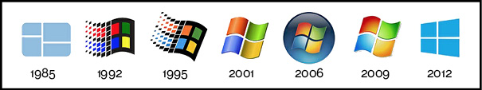

INTRODUCTION
Have you ever realized that the save button on your computer is represented by a tiny depiction of a floppy disk? An object which people don’t use anymore. Most young children might not even recognize it at all. They have never seen this in real life, never used it for storing their files. Within a short time the floppy disk was not used anymore, and we moved on to other saving formats like CD-Roms, USBs, hard-disks, and many others to come. At the start of my research I found an image of someone holding a floppy-disk, with the title “a 3d printed save button!”. I found it fascinating how only seeing and knowing an icon based on a real object had made the object lose its real meaning.
Because of the amount of time we spend behind our computers and on our phones, icons and symbols have a more important role in our daily lives. Huge amounts of data is presented to us daily and icons and symbols visualize quickly what words can’t say in the same amount of time. But in doing this a lot of factors affect the significance of these signs.
This thesis will explore several factors that influence the way an interface sign is perceived and how meaning is connected to signs in an interface in the first place. The current addiction to new digital devices, constantly improving and renewing, the amount of digital literacy, design aesthetics, and the overall importance of icons and symbols are discussed.
The main focus of this thesis will be the evolution of significance of interface signs on a screen. How significance is created for icons and symbols, how they can lose their meaning and when we might need to replace or get rid of them. The life and death of digital signs and when to kill them. It also explores the influence icons and symbols has on the physical objects they represent. Like the floppy disk (the object) becoming a 3D-printed save button (the digital representation).
This lead me to my research question:
In what way does the design of interface symbols and icons affect the way we see the (physical) world, and, considering the future, should we re-think their design accordingly?
1. Addicted to the 'new'
When exploring the subject of digital icons and symbols I realized quickly that there were many more examples like the floppy-disk. Many more objects that are replaced, so also many more icons which were relevant at the time they were designed but have lost their meaning because in modern times we seem to continuously revamp, redesign and improve current devices. All of the icons that undergo this process of not referring to their intended physical object could change the significance of the real object. Significance is shifting from meaning of the object to meaning of the icon (which is actually based on the meaning the object had). These icons are only read they way they were meant to be read by the people that really experienced these objects before the computer became such a big part of our lives.
Media and technologies shape us more than ever before. The changes that are happening due to (fast) technological developments are seen everywhere. Relatively new software products (computer, smartphone) are tools that are used in society every day, both professionally and in our daily lives. People communicate with each other via computer, work using a computer and basically do everything on their computer. Life without this device is unimaginable. The flow of information on this device is growing constantly and the products we use to access the Internet are changing with it. To grasp this vast amount of (digital) information we are exposed to, we need images to make it all easier to process. So Graphical User Interface (GUI) design is becoming progressively more important to all aspects of life. To manage and control the complex situations in which we find ourselves. We communicate (“speak”) via our computers, but we also have to communicate (understand) our computers. Human-Computer interaction (HCI) is a sign based process.
People have different opinions about if a sign based process is the right way to communicate between user and computer, and what the role of text is in this matter. Dr. Lynell Burmark, Ph.D. Associate at the Thornburg Center for Professional Development and writer of several books and papers on visual literacy, said,
“...unless our words, concepts, ideas are hooked onto an image, they will go in one ear, sail through the brain, and go out the other ear. Words are processed by our short-term memory where we can only retain about 7 bits of information. Images, on the other hand, go directly into long-term memory where they are indelibly etched.”
Therefore, it is not surprising that the complex functions/tools on our computers are almost always represented in icons and/or symbols for us to understand them. 1
Although icons might be central to Graphical User Interfaces and they do connect user with computer, text can (and often has to) provide more specific information about an icon or in stead of an icon. Then the motivation in Burmarks quote about learnability, easy to remember images doesn’t hold up. Designers hailed pictures as universal language in the 20th century. Yet in the age of code, text has become a more common denominator than images, as text is searchable, translatable and capable of being reformatted and restyled for alternative or future media. [3]
Another opinion about images with or without text is that without graphics, an idea may be lost in a sea of words. Without words, a graphic may be lost to ambiguity. Robert E. Horn, an award-winning scholar at Stanford University’s Center for the Study of Language and Information, said,
“When words and visual elements are closely entwined, we create something new and we augment our communal intelligence ... visual language has the potential for increasing human bandwidth’—the capacity to take in, comprehend, and more efficiently synthesize large amounts of new information.” [2]
All the points made above seem valid but for this thesis I will (first) only focus on the use of image in interface design, as the subject of text and image is one to write a whole thesis about on its own.
1.1 TAKING THINGS AT INTERFACE VALUE, OR NOT
The GUI uses the computers graphics capabilities to make a program easier to use. It’s the part between the complex computer language and (most) users. They try to facilitate computer use regardless of users’ level of expertise. Some might know and use the command-driven, textual interface but for most people the GUI is the most practical way to use a computer. Signs are already used everywhere to simplify complexities of (new) spaces. (EXAMPLE? airport, roadsigns) The computer and smartphone are definitely strange new spaces (as they have only existed since the 1980’s) and will have many new functions and will take on new shapes that we do not know yet. We need all the help we can get. How does this take shape, and what will happen when those new spaces become familiar?
Sherry Turkle explains in her article The Way Computers Change the Way we Think: “We expect software to be easy to use, and we assume that we don’t have to know how a computer works. Macintosh users began to use the term ‘transparency’ when they talked about seeing their documents and programs represented by attractive and easy-to-interpret icons. They were referring to an ability to make things work without needing to go below the screen surface. Today, when people say that something is transparent, they mean that they can see how to make it work, not that they know how it works. In other words, transparency means epistemic opacity.” [4]
What Turkle means is that the people who either built of bought the first generation of personal computers, understood their operating system down to the bits and bytes. The operating systems became more complex, but still people tried to understand their computers completely. Contemporary information technology encourages different kind of dealing with understanding the complex systems. People take things at an (inter)face value. Nobody probes below the surface.(MORE OPINIONS?)
Although Turkles statement might be true in certain aspects, I have also noticed recent developments that actually focus more on the understanding below the surface. Even at art academies the focus is shifting from only designing the surface to also knowing how the tools work. Coding classes are introduced and there is an apparent interest (in the design world) for (coding) language. I think the tendency Turkle talks about it a temporary truth. It might have been that way in 2004 but now this has already shifted towards a more investigating mindset. This might only get more, or get less again; the future is hard to predict when it comes to people interacting with computers.
Besides the notion that people take things only at interface value, which has effect on the way icons will be perceived and used, the notion of people having a more investigating mindset also has its way of effecting the way an icon can be interpreted and thus designed. Different digital literacies influence how a computer is used by the user, and how icons and symbols are interpreted. People that grow up using the computer understand them better than people who did not. They have different levels of webskills.
1.2 DIGITAL LITERACIES
In 2001 Prensky introduced the term Digital Natives to describe a new generation of users who “have spent their entire lives surrounded by and using computers, videogames, digital music players, videocams, cell phones, and all the other toys and tools of the digital age”. [5]
Digital naives are users who are unfamiliar with, and didn’t grow up with these devices. In a sense this devision is still valid but some of the claims Prensky made are outdated already. Some of his examples for the Native/Immigrant-divide can not be applied now. (WHY NOT?)
In the following chapter I will mention three levels of users, and how they understand and use digital products according to Prensky’s explenation while pointing out what has changed already since his claims were made.
Naives When computer users were not familiar with computers and thus graphical user interfaces (GUI) and it was all still new, they were confronted with iconic representations of files, printers, trashcans on their computer screens. They perceived those icons to be representations of the real artifacts as those were the only thing they knew before. They consciously replaced the digital, symbolic code with these visual metaphors. The digital naives are GUI users that have little experience with computers. For them the words ‘files’ and ‘folders’ stand for physical objects. They understand the icons as metaphors, that are there to help using computers.
Native The digital native on the other hand grew up with digital products. So they do not conceive the computer model and it’s icons as a representation of a physical office with files and a trashcan like the digital naives. There is a big chance that before they knew the corresponding representations on screen they were unaware of (most) objects the icons refer to, especially the physical objects that were used as reference points around the time the first GUI was introduced. This depends on their age. For them, because of the lack of knowing the original depicted objects, it is difficult/impossible to construct any similarity so to them the icons are just arbitrary symbols (more about this later). Children today grow up simultaneously in the ‘real’ world and in the digital world, the border between the two becomes smudged and non-existant. At this moment in time there already is a second generation of digital natives, who experience this divide between digital and analog even less. To them swiping might feel more natural than peeling an orange.
Immigrant In addition, there are also digital immigrants who were not born in the digital era and did not grow up with digital technology but have embraced it. At first they might conceive icons the same way as digital naives. If the digital model stays consistent over long periods of time, signs go from being consciously conceived as representations of something, to semi natural index signs. Interface signs can be perceived more and more like they are perceived by (the second generation of) digital natives.
These three levels of expertise, influence the way icons are perceived and used. Designers can keep their user in mind while designing. Maybe for digital naives icons are a necessity, but for natives symbols would suffice. Keep in mind these are really strict devisions, which will probably be different per person and overlap and change over time. Another factor to take into account when questioning how meaning is connected to digital signs are the different types of semiotic signs, which I will explain according to the theory of signs by Charles Sanders Pierce (1839-1914).
3.0 Theory of Signs
'WE THINK ONLY IN SIGNS' - Charles Sanders Peirce (1839-1914) 8
Appendix
Click to compare
SOURCES
1. www.encylco.nl ↩
THANKS
I would like to thank Nick Axel, Dirk Vis, Marjan Brandsma, Eric Schrijver, Maarten Cornel and Paul Berner, for helping me during this thesis. And my grandma for not understanding anything I write about.